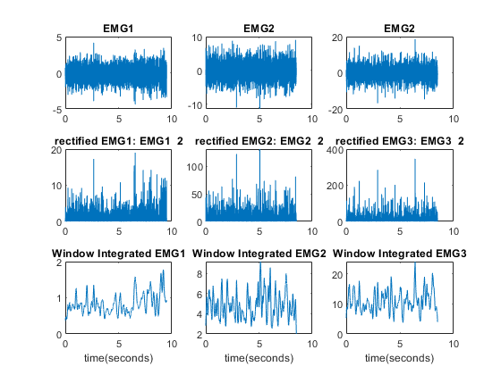
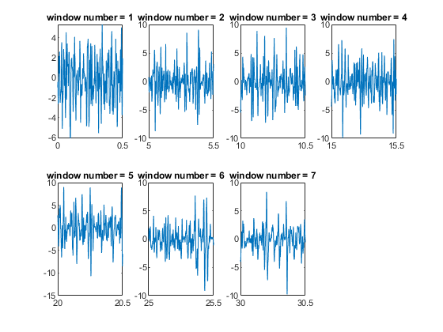
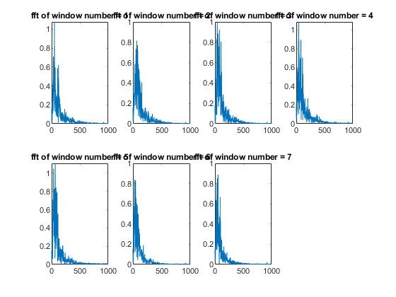
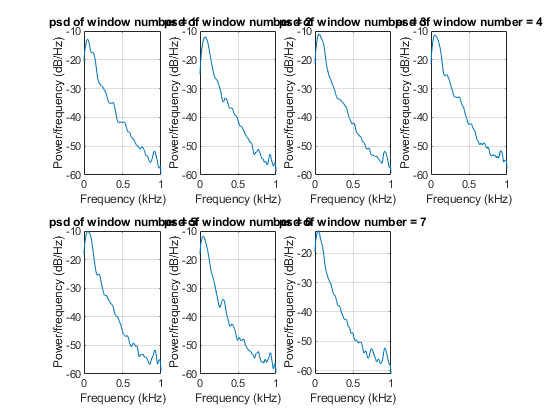
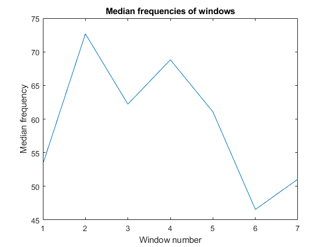
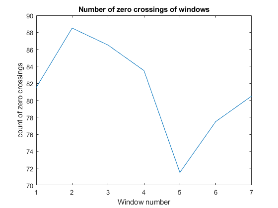

Contents
clc close all clear % cell2mat(struct2cell(YourStructure)) EMG1 = cell2mat(struct2cell(load('EMG1.mat')))*10000; EMG2 = cell2mat(struct2cell(load('EMG2.mat')))*10000; EMG3 = cell2mat(struct2cell(load('EMG3.mat')))*10000; EMG4 = cell2mat(struct2cell(load('EMG4.mat')))*10000; Fs = 2000;
Part A
clc close all [t1,m_av1] = moving_average(EMG1, Fs, 100, 500); [t2,m_av2] = moving_average(EMG2, Fs, 100, 500); [t3,m_av3] = moving_average(EMG3, Fs, 100, 500); figure(Name='Moving average and Rectified EMGs') subplot(331), plot(t1, EMG1), title('EMG1') subplot(332), plot(t2, EMG2), title('EMG2') subplot(333), plot(t3, EMG3), title('EMG2') subplot(334), plot(t1, EMG1.^2), title('rectified EMG1: EMG1 ^ 2') subplot(335), plot(t2, EMG2.^2), title('rectified EMG2: EMG2 ^ 2') subplot(336), plot(t3, EMG3.^2), title('rectified EMG3: EMG3 ^ 2') subplot(337), plot(t1, m_av1), title('Window Integrated EMG1'), xlabel('time(seconds)') subplot(338), plot(t2, m_av2), title('Window Integrated EMG2'), xlabel('time(seconds)') subplot(339), plot(t3, m_av3), title('Window Integrated EMG3'), xlabel('time(seconds)')

Part B
clc figure(Name='Windows in Time domain') for i =1:7 window = EMG4((i-1)*5*Fs + 1 : (i-1)*Fs*5 + 0.5*Fs); t = linspace((i-1)*5, (i-1)*5 + 0.5, length(window)); subplot(2,4,i), plot(t,window), title(['window number = ',num2str(i)]) end

Part C
clc figure(Name='FFT of windows') for i =1:7 window = EMG4((i-1)*5*Fs + 1 : (i-1)*Fs*5 + 0.5*Fs); [f, x] = my_fft(window, Fs); subplot(2,4,i), plot(f,x), title(['fft of window number = ',num2str(i)]) end figure(Name='PSD of windows') h=spectrum.welch; for i =1:7 window = EMG4((i-1)*5*Fs + 1 : (i-1)*Fs*5 + 0.5*Fs); subplot(2,4,i), psd(h,window, 'fs', Fs), title(['psd of window number = ',num2str(i)]) end


Part D
clc figure(Name='Median frequencies of windows') med_freq = zeros(1,7); for i =1:7 window = EMG4((i-1)*5*Fs + 1 : (i-1)*Fs*5 + 0.5*Fs); med_freq(i) = medfreq(window,Fs); end plot(1:7,med_freq), xlabel('Window number'), ylabel('Median frequency'), title('Median frequencies of windows')

Part E
clc figure(Name='Number of zero crossings of windows') zero_crossings = zeros(1,7); for i =1:7 window = EMG4((i-1)*5*Fs + 1 : (i-1)*Fs*5 + 0.5*Fs); [~,zero_crossings(i)] = zerocrossrate(window); end plot(1:7,zero_crossings), xlabel('Window number'), ylabel('count of zero crossings'), title('Number of zero crossings of windows')
